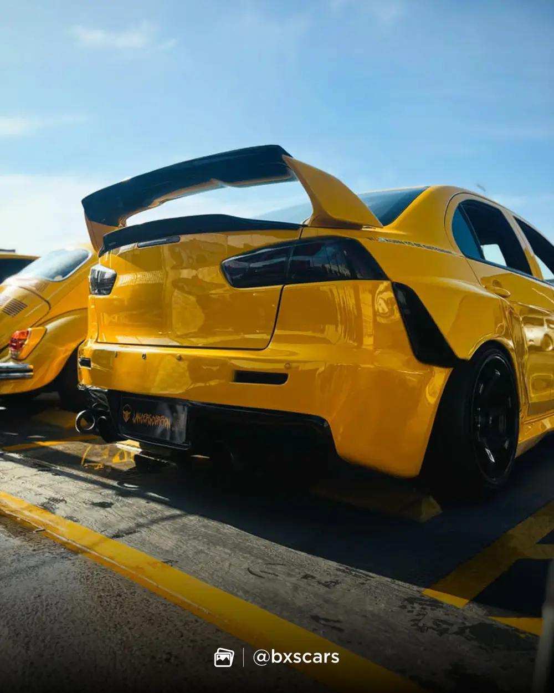
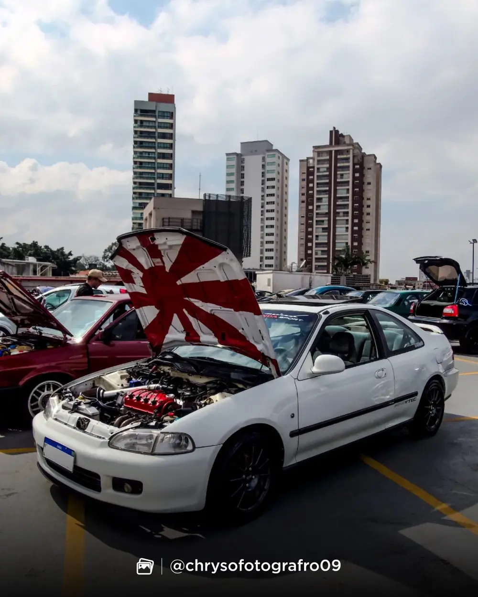
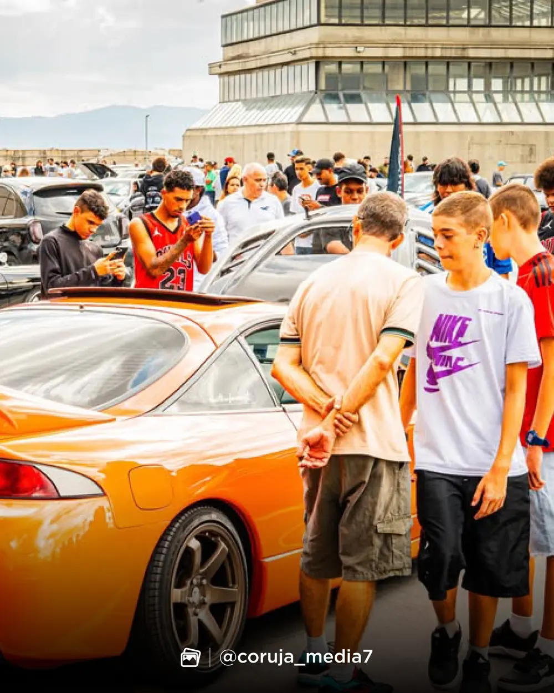
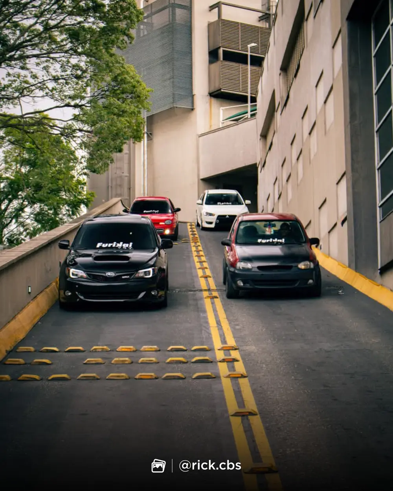
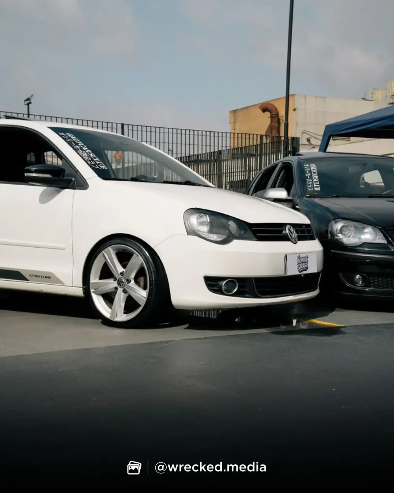
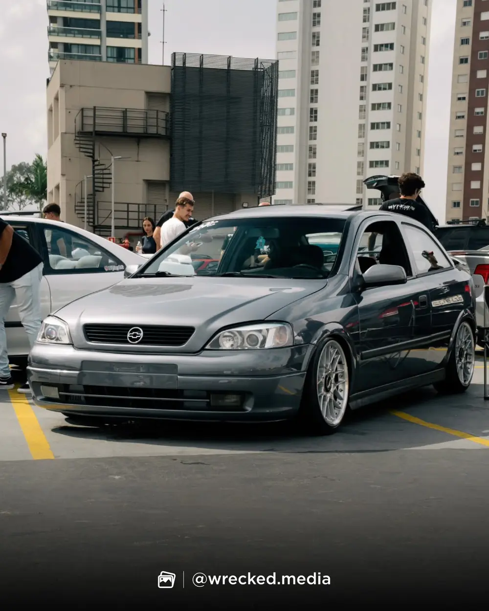

Only Cars
Meeting.
Uma noite de exposição automotiva e drift no coração de São Paulo.
Lote 1 abertoR$ 45por carro Expo
Carregando lote atual...0%
Conferindo vagas disponíveis
Lote 1 disponível • 30 ingressos
Contagem regressiva
Falta pouco para
acender as luzes.
Seu carro faz parte
Original ou modificado,
todos vivem a cultura.
O Only Cars Meeting reúne a comunidade automotiva em uma noite dedicada a carros, cultura e experiências. Teremos uma área de exposição para projetos de diferentes estilos, apresentação de drift e um ambiente preparado para aproximar proprietários, entusiastas, marcas e apaixonados pelo universo automotivo.
Não existe seleção prévia de veículos: qualquer projeto poderá participar da exposição mediante a compra do ingresso Expo e disponibilidade de vagas.
Memórias Only
A cultura já estava
em movimento.
Alguns registros dos encontros que trouxeram a comunidade até aqui.






Do site à portaria
Seu ingresso, sempre com você.
- 01Cadastre o veículoInforme motorista, placa, modelo, ano e cor.
- 02Pague com Mercado PagoA confirmação acontece automaticamente.
- 03Receba o QR CodeO ingresso ficará disponível em Minha conta.
- 04Valide na entradaA equipe confere o veículo e ativa sua credencial.
Onde vai acontecer
Centro de Esportes Radicais
Av. Presidente Castelo Branco, 5700
Bom Retiro • São Paulo/SP
Antes de comprar
Perguntas rápidas.
Pedestre precisa comprar ingresso?
Não. A entrada de pedestres será gratuita. O ingresso Expo é cobrado somente para o veículo.
Qualquer carro pode participar?
Sim. Não haverá aprovação prévia do veículo, desde que existam vagas Expo disponíveis.
Posso sair e entrar novamente?
Sim. Depois da primeira validação, sua credencial de reentrada ficará disponível em Minha conta.
Posso transferir meu ingresso?
Não. O ingresso será vinculado ao motorista, placa e modelo informados na compra.
Only Cars Meeting • 23.10.2026